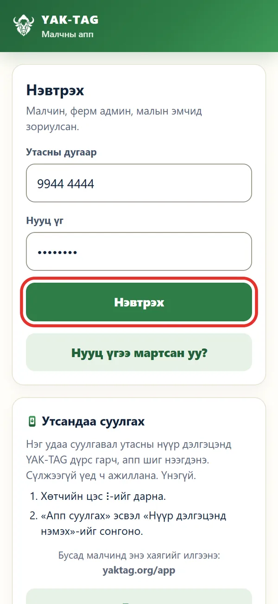

1-Р АЛХАМ
yaktag.org/app → Нэвтрэх
Утсаараа yaktag.org/app хаягийг нээнэ. Утасны дугаар, админаас авсан нууц үгээ бичээд Нэвтрэх дарна.
Дараагийн удаа дахин асуухгүй.
Утсандаа суулгах: доор гарах «Утсандаа суулгах» картаар апп шиг суулгана. Утасны нүүр дэлгэцэнд YAK-TAG дүрс гарна.
Нууц үгээ мартвал: Нууц үгээ мартсан уу? Telegram холбосон бол сэргээх код Telegram-д ирнэ (3-р бүлэг).
